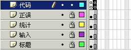

Flash脚本实例《打字》制作教程
作者：TeliuTe 来源：基础教程网
九、输入代码 返回目录 下一课
这一课我们来设计输入框的代码，下面我们来看一个练习；
1、启动计时器
1）首先在代码图层的第二帧，插入一个空白关键帧，其他层插入帧，在代码图层的第二帧里输入代码；

2）输入下面的代码，启动定时器；
stop();//停在这一帧上
intervalId = setInterval(this, "CounTime", 1000);//定时器，每隔一秒调用 CounTime函数
2、加载篇章字符串
1）切割好的字符串，存放在数组中，按照数组的规律，每次加载3行；
if (strAll_array.length > (intPage*3+0))//开始页数为0,数组从0开始计数小段
{
lb1_txt.text = strAll_array[intPage*3+0];
//加载第一段；
}
if (strAll_array.length > (intPage*3+1))
{
lb2_txt.text = strAll_array[intPage*3+1];
//加载第二段；
}
if (strAll_array.length > (intPage*3+2))
{
lb3_txt.text = strAll_array[intPage*3+2];
//加载第三段；
}
2）加载完成后，把光标定在第一行输入框，准备输入，继续输入下面的代码；
//把输入焦点给第一个输入文本框
in1_txt.type ="input";
in1_txt.focusEnabled = true;
Selection.setFocus(in1_txt);
in2_txt.type ="dynamic"; //先锁定下面两个
in3_txt.type ="dynamic";
3、输入框代码
1）从第一个输入框开始，分别输入各自代码，统计各个输入框，继续输入下面的代码；
//*******************************************************
//有字符输入，输入框1内容改变
//*******************************************************
in1_txt.onChanged = function(textfield_txt:TextField)
{
//“输入”的总数， 前面输入的字符总数加上现在这一行里的
strInTotal = String(intInTotal +
in1_txt.length); //换成字符形式
intlb = lb1_txt.length; //标签里的字符数，最后一行可能小于40
intIn = in1_txt.text.length;
//输入框的文本长度，存一下用着方便
inA_txt = in1_txt.text.substr(-1,1); //取出输入框的最后一个字符
lbA_txt = lb1_txt.text.charAt(intIn - 1); //从0开始计算
if (err1_txt._visible) //错误标志先不可见
{
err1_txt._visible = false;
}
//正误判断，比一下同一个字符是否相同
if (inA_txt != lbA_txt) //如果输入的字母跟标签上不同，并且不是退格键
{
err1_txt._visible = true;//显示错误标志
if (intTmp < intIn)
//正常情况下是小于，还没有赋值给 intTmp
{
intErr =
intErr + 1; //错误数加一
strErrTotal =
String(intErr); //显示失误的字符数
}
if (intErr > (intAll *
0.33)) //1/3的错误
{
clearInterval(intervalId);//定时器关闭
lb1_txt.text
=("false.");
in1_txt.type ="dynamic"; //锁定不允许输入了
}
}//end if !=, 结束正误判断
intTmp = intIn;//输入正确的话，Tmp 的值一直跟着 In1 往前走
//按退格键的话，Tmp
的值会大于 In1 的值
//检查是否换行，若是就锁定本行
if (intIn == intlb) //已经输完全部字符
{
intInTotal = intInTotal +
in1_txt.length; //总共输入的是前面的加这一行的；
intTmp = 0; //初始化给下一个用
err1_txt._visible =
false;//取消错误标志
in1_txt.type ="dynamic";
//改为动态，锁定不让输入了；
//第二个准备输入，把输入焦点给第二个输入文本框
if (lb2_txt.text != "") //还有字符
{
in2_txt.type
="input"; //改为输入
in2_txt.focusEnabled = true;
Selection.setFocus(in2_txt);
}
else //输完了
{
clearInterval(intervalId);//定时器关闭
in1_txt.type ="dynamic";//改为动态，锁定不让输入了；
}
}//已经输完
}; //end in1_txt.onChanged
2）第二个输入框的代码，跟第一个相同，继续输入下面的代码；
//*******************************************************
//第2个输入框
//*******************************************************
in2_txt.onChanged = function(textfield_txt:TextField)
{
//已经输入的总数，前面输入的加这一行的
strInTotal = String(intInTotal + in2_txt.length);
intlb = lb2_txt.length; //标签里的字符数，最后一行可能小于40
intIn = in2_txt.text.length;
//输入框的文本长度，存一下用着方便
inA_txt = in2_txt.text.substr(-1,1); //取出最后一个字符
lbA_txt = lb2_txt.text.charAt(intIn-1);
if (err2_txt._visible) //错误标志先不可见
{
err2_txt._visible = false;
}
//找出标签里的同一个字符，比一下是否相同
if (inA_txt != lbA_txt) //如果输入的字母跟标签上不同，并且不是退格键
{
err2_txt._visible = true;//显示错误标志
if (intTmp < intIn)
//正常情况下是小于，还没有赋值给 intTmp
{
intErr =
intErr + 1; //错误数加一
strErrTotal =
String(intErr); //显示失误的字符数
}
if (intErr > (intAll *
0.33)) //1/3的错误
{
clearInterval(intervalId);//定时器关闭
lb2_txt.text
=("false.");
in2_txt.type ="dynamic"; //锁定不允许输入了
}
}//end if !=, 结束正误判断
intTmp = intIn;//输入正确的话，Tmp 的值一直跟着 In1 往前走
//按退格键的话，Tmp
的值会大于 In1 的值
//检查是否换行，锁定本行
if (intIn == intlb) //比一下是否已经数完全部字符
{
intInTotal = intInTotal +
in2_txt.length; //总共输入的是前面的加这一行又输入的；
in2_txt.type ="dynamic";
//改为动态，锁定不让输入了；
intTmp = 0; //初始化给下一个用
err2_txt._visible =
false;//取消错误标志
//把输入焦点给第三个输入文本框
if (lb3_txt.text != "") //还有字符
{
in3_txt.type
="input"; //改为输入，准备输入
in3_txt.focusEnabled = true;
Selection.setFocus(in3_txt);
}
else //输完了已经
{
clearInterval(intervalId);//定时器关闭
in2_txt.type ="dynamic";//改为动态，锁定不让输入了；
}
}
}; //end in2_txt.onChanged
3）第三个输入框的代码，跟第一个相似，多了一个翻页动作，继续输入下面的代码；
//*******************************************************
//第3个输入框
//*******************************************************
in3_txt.onChanged = function(textfield_txt:TextField)
{
//已经输入的总数，前面输入的加这一行的
strInTotal = String(intInTotal + in3_txt.length);
intlb = lb3_txt.length; //标签里的字符数，最后一行可能小于40
intIn = in3_txt.text.length;
//输入框的文本长度，存一下用着方便
inA_txt = in3_txt.text.substr(-1,1); //取出最后一个字符
lbA_txt = lb3_txt.text .charAt(intIn-1);
if (err3_txt._visible) //错误标志先不可见
{
err3_txt._visible = false;
}
//找出标签里的同一个字符，比一下是否相同
if (inA_txt != lbA_txt) //如果输入的字母跟标签上不同，并且不是退格键
{
err3_txt._visible = true;//显示错误标志
if (intTmp < intIn)
//正常情况下是小于，还没有赋值给 intTmp
{
intErr =
intErr + 1; //错误数加一
strErrTotal =
String(intErr); //显示失误的字符数
}
if (intErr > (intAll *
0.33)) //1/3的错误
{
clearInterval(intervalId);//定时器关闭
lb3_txt.text
=("false.");
in3_txt.type ="dynamic"; //锁定不允许输入了
}
}//end if !=, 结束正误判断
intTmp = intIn;//输入正确的话，Tmp 的值一直跟着 In1 往前走
//按退格键的话，Tmp
的值会大于 In1 的值
//检查是否换行，锁定本行
if (intIn == intlb) //已经输完全部字符
{
intInTotal = intInTotal +
in3_txt.length; //总共输入的是前面的加这一行的；
in3_txt.type ="dynamic";
//改为动态，锁定不让输入了；
intTmp = 0; //初始化给下一个用
err3_txt._visible =
false;//取消错误标志
if (intAll > intInTotal)
//还没输完
{
intPage =
intPage + 1;//下一页了
lb1_txt.text =
lb2_txt.text = lb3_txt.text = "";
if
(strAll_array.length > (intPage*3+0))
{
lb1_txt.text = strAll_array[intPage+0]; //加载第一段；
}
if
(strAll_array.length > (intPage*3+1))
{
lb2_txt.text = strAll_array[intPage*3+1]; //加载第二段；
}
if
(strAll_array.length > (intPage*3+2))
{
lb3_txt.text = strAll_array[intPage*3+2]; //加载第三段；
}
//清空原来的输入文本框
in1_txt.text
="";
in2_txt.text
="";
in3_txt.text
="";
//把输入焦点给第一个输入文本框
in1_txt.type
="input";
in1_txt.focusEnabled = true;
Selection.setFocus(in1_txt);
}
else//输完了
{
clearInterval(intervalId);//定时器关闭
in3_txt.type ="dynamic";//改为动态，锁定不让输入了；
}//end if (intAll >
intInTotal) 还没输完
}//end if (intIn == intlb)
}; //end in3_txt.onChanged
本节学习了输入框代码设计，如果你成功地完成了练习，请继续学习下一课内容；
返回目录 下一课
本教程由86团学校TeliuTe制作|著作权所有
基础教程网：http://teliute.org/
美丽的校园……
转载和引用本站内容，请保留作者和本站链接。